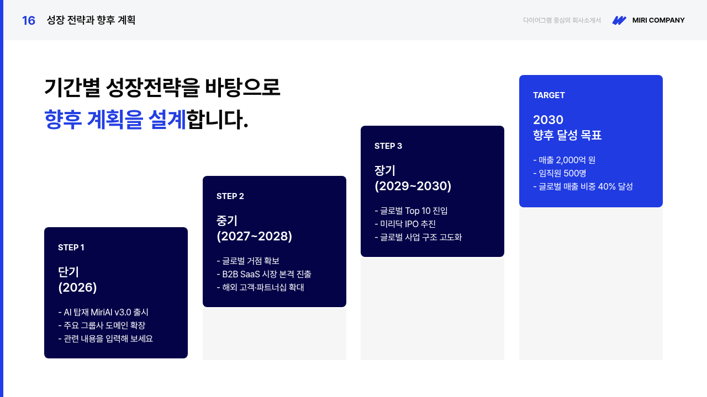
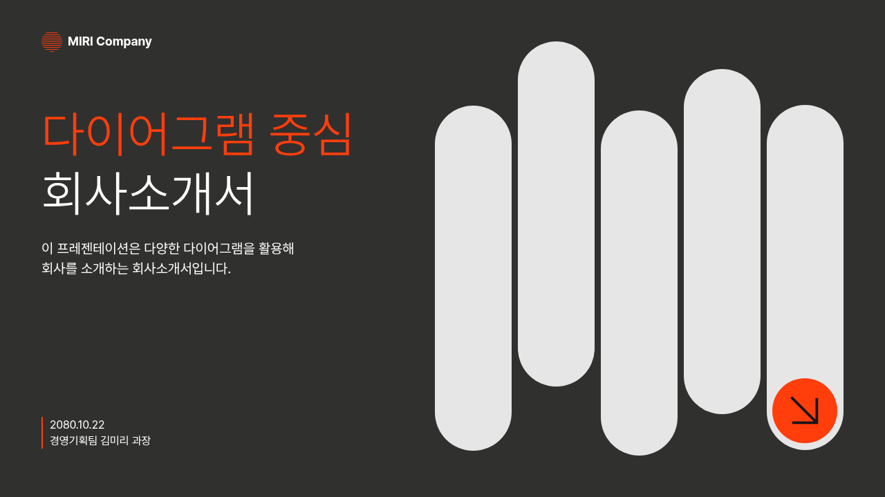
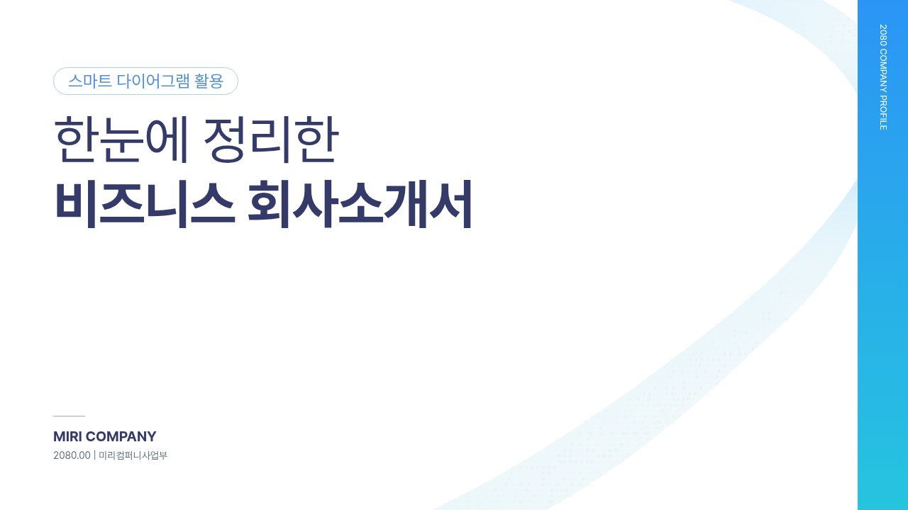
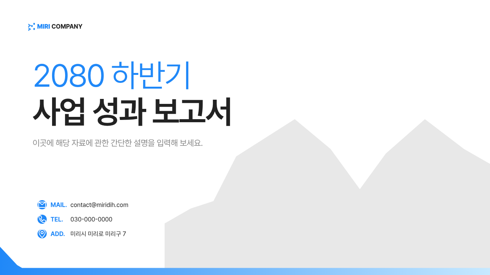
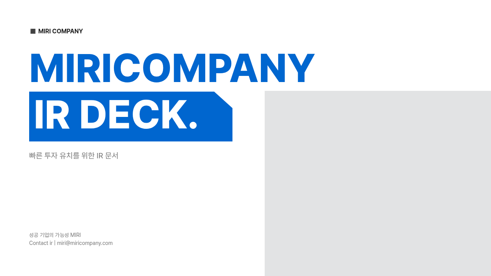
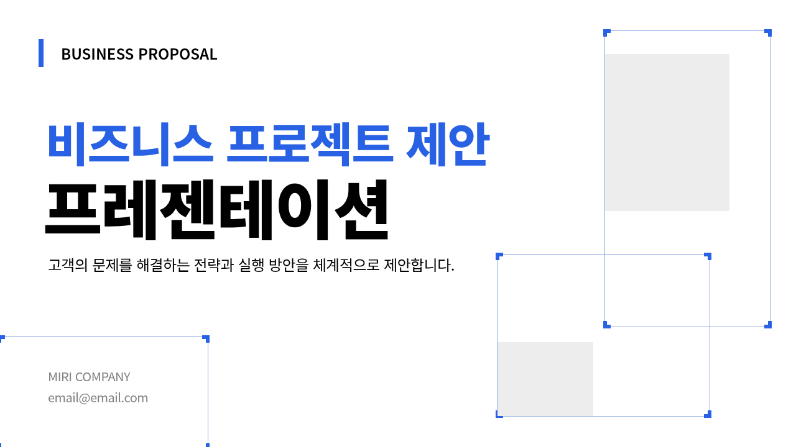

054 · cinder-pulse
20 pages · 56 elements
055 · current-fold
18 pages · 56 elements
056 · scanline-rise
18 pages · 56 elements058 · halo-field
15 pages · 56 elements
067 · corner-signal
21 pages · 56 elements